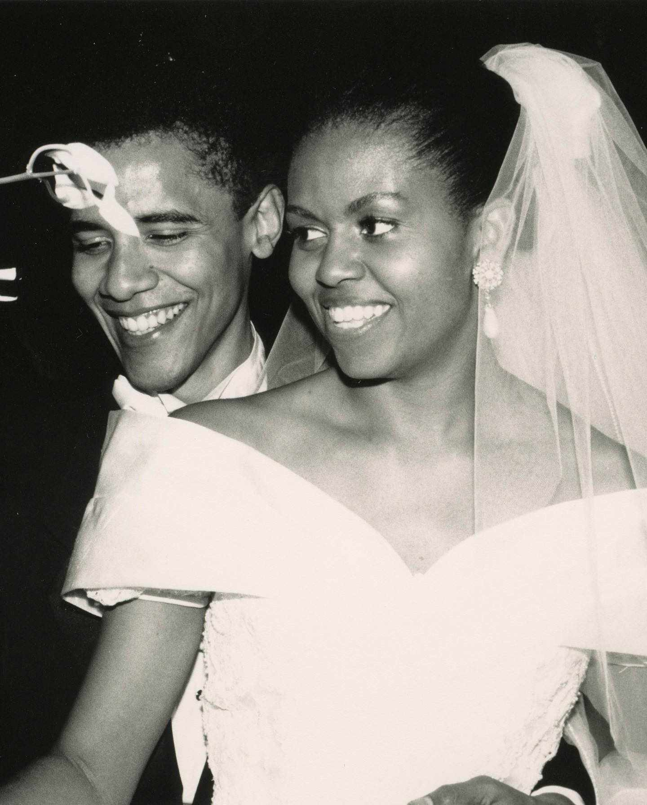
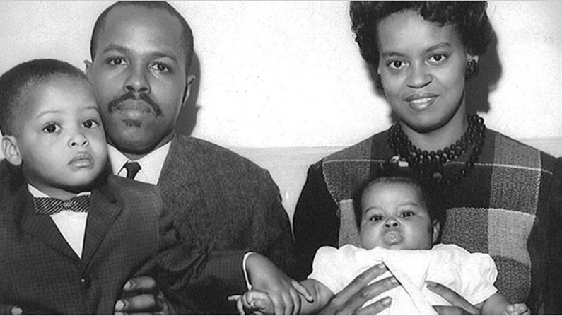

.jpg)
"For me, becoming isn't about arriving somewhere or achieving a certain aim. I see it instead as forward motion, a means of evolving, a way to reach continuously toward a better self"
Racism and Identity
In her book Becoming, Michelle Obama explained how racism and sexism have affected her
family. Michelle’s grandfather, Dandy, who was born in 1912 in South Carolina, was deprived of
going to college despite being excellent and intelligent, just because he was from a poor family
and he was Black. He moved to Chicago to find a high-paying job, leaving racial oppression in
South Carolina, but it was difficult to find a well-paying job without a union card (it was
impossible for Black people). Michelle also notes that her great-aunt Robbie faced
discrimination due to her race. Robbie sued Northwestern University for discrimination because
she had registered for a workshop there but was not being allowed to have a room in the
women’s dorm and was denied getting an education.
Michelle illustrated how racism continues to influence her family. For instance, when Michelle’s
brother, Craig, received a new bike, he was immediately arrested by the police because they
assumed a young Black boy could not own a bike. The discrimination was also evident when
Michelle was admitted to Princeton University. People thought that she got it because of the
affirmative action, which is wrong and devalues the hard-earned work she has done.
The impact of racism and stereotypes becomes especially clear during Barack’s presidential
campaign and election. Rumors spread that Barack was a radical Muslim, and during his second
campaign and election, Barack faced challenges as there were conspiracy theories that Barack's
Hawaiian birth certificate was fake. These criticisms are racist because they come from the fact
that Barack is Black and has a name that sounds unfamiliar to many white people.
Michelle herself also faces prejudice because she is Black. People criticized Michelle for her
choice of dressing and her speech. But she was strong enough to fight back against such
criticisms.
Love and Relationships
Michelle Obama is a resilient and determined woman who believes in
accountability and taking full responsibility for every aspect of her life.
She is forced to balance responsibilities between her family, her husband's
political life, and her role as the first lady of the United States. She
acknowledges that it is not easy and requires making many compromises to
maintain balance and sobriety.

Michelle falls in love with Obama and, despite their differences, she handles
their relationship in an ideally sophisticated manner. Michelle realises that
Obama does not mind messes, whereas she is a neat-freak and prefers being
orderly. When Obama leaves to go back to Harvard Law School, Michelle asks
Obama to call him frequently to keep in touch, but Obama insists on writing,
saying that he is “not much of a phone guy,”. She accepts, but makes sure
that they hear each other’s voices at least once in a while. The long-distance
relationship compromise is also seen where, after the wedding, Obama had a
deadline to finish his book to pay off his debts. His mother rents a cabin for
him for six months in Indonesia, causing Michelle to feel lonely for six months.
Michelle had had previous experiences in relationships having had her first
boyfriend in Princeton, Kevin, a hunky football star who was a ‘near
impossible combination of tall, sweet and rugged’. Their relationship ended
after Kevin decided to pursue a career as an NFL mascot. She also talks
about her first serious boyfriend, David, who smoked pot and held dates at
Red Lobster.
Throughout all these relationships, Michelle taught herself how to embrace
different personalities in people as well as to live adapting to various lifestyle.
This ability to adapt to others would also help Michelle cope as a leader in various
organizations.
Friendships
Michelle Obama writes, ” Friendships between women, as any woman will tell you, are built of a thousand small acts of kindness… swapped back and forth and over again,” and she also writes, “For me, maintaining close friendships isn’t an option—it is a necessity.” I often refer to my close friends as my “kitchen table.” The friends at my table come from all different parts of my life— college, Chicago, DC, and every other period, too. Having this perspective, Michelle and Jesse Jackson’s daughter, Santita Jackson, were very close buddies when they were young. Santita Jackson was eventually Michelle Obama’s maid of honor at her wedding. Santita grew up with Jesse Jackson being her father, and once in a while, Michelle Obama would follow her to her father’s rallies. Michelle Obama recalls that at the time, she used to marvel at the idea of being the child of a political figure like Jesse Jackson. At college, Michelle got a close friend called Suzanne Alele. She and Suzanne are poles apart despite their close friendship: she often prioritizes fun over making a practical choices. Michelle judges her for this, but when she passes away from an aggressive cancer at twenty-six, Michelle realizes that Suzanne’s way of doing things may have been right, and Michelle tries to find more fulfilling work in her life. Michelle also met Valerie Jarrett in 1991, when she was deputy chief of staff at the Chicago mayor’s office. She quickly became a trusted friend and adviser to both Michelle and Barack. Overall, Michelle places a high value on friendship, which is why she has long-lasting friendships starting from her childhood.
Family
In Becoming, Michelle Obama beautifully illustrates her deep love and unwavering
support for her family, especially her father. Despite his struggle with multiple sclerosis,
their relationship remained strong, marked by deep respect, affection, and unspoken
understanding. Michelle admired his quiet strength and dignity, and in return, she
showed her love through care and attentiveness helping him with tasks, walking slowly
beside him, and always making sure he felt included and respected. She never saw him
as weak, but as a hero who inspired her to be strong, compassionate, and determined.
Her actions reflected the deep bond they shared, and her close knit family, rooted in love
and resilience, became the foundation of her strength and identity.

Mr. and Mrs. Fraser and Marian Robinson and Michelle;
somwhere around 1965
Michelle describes her childhood home on the South Side of Chicago a small apartment
where she, her brother Craig, and their parents lived close together, often hearing each
other through the walls. Despite the modest space, it was filled with warmth, love, and
strong values. Her parents, Fraser and Marian, worked hard to give their children a good
life, teaching them to speak up, stay grounded, and believe in their worth. That tiny
upstairs apartment, with its closeness and care, laid the foundation for Michelle's deep
sense of family, resilience, and purpose. It’s a powerful reminder that love and strength
often grow strongest in the humblest of homes.
Their relationship with their daughters, Malia and Sasha, was filled with intentional care,
warmth, and presence, despite the demands of public life. The moment that reveals their
priorities as parents was when Malia fell seriously ill as a baby. Michelle recalls how

of the United States of America
Barack, despite his busy schedule, dropped everything to be by their side at the hospital.
That moment showed her that he wasn’t just ambitious and driven he was also a deeply
committed father who put family first. Together, Michelle and Barack made sure their
daughters felt grounded, loved, and supported, shielding them as much as possible from
the pressures of fame while giving them a stable and nurturing home.
Michelle Obama beautifully expresses the importance of family through the deep bond
shared across three generations. When Michelle and Barack had to travel or focus on
demanding responsibilities, her mother, Marian Robinson, stepped in not just as a
caregiver, but as a constant source of love, wisdom, and stability for Malia and Sasha.
By moving into the White House with them, Marian ensured that the girls were
surrounded by family, not just formality. She treated them with quiet strength and
nurturing care, offering a sense of normal life in an extraordinary setting. Her presence
reminded them and the world that no matter how high the stage, family remains the
foundation. Through Marian's support, Michelle and Barack were able to lead, knowing
their daughters were safe, loved, and deeply rooted in the values of home and kinship.
Politics
Michelle’s "Becoming" provides a clear perspective on leadership and politics, particularly as
experienced by a Black woman navigating predominantly white, male-dominated spaces. It
provides valuable insights into the realities of political life, the nature of leadership, and the
personal impact of political decisions.
1. Reluctance and Reality of Politics:
Michelle Obama candidly expresses her initial reluctance towards political life. She details her
concerns about the toll it would take on her family and her skepticism about the political process.
However, she also demonstrates her commitment to public service and her willingness to engage in
politics when she believes it's necessary. is a Public Allies
The book portrays the realities of political life, including the intense scrutiny, the personal
sacrifices, and the often-harsh nature of political discourse.
2. Leadership as a Personal Journey:
"Becoming" emphasizes that leadership is not just about holding positions of power but also about
personal growth, self-awareness, and authenticity.
Michelle Obama's leadership style is characterized by her empathy, her focus on community, and her
commitment to creating opportunities for others.
The book highlights the importance of leading by example and staying true to one's values, even in the
face of adversity.
3. The Intersection of Race, Gender, and Politics:
The book explores the unique challenges faced by Black women in politics, including the stereotypes, the
biases, and the added pressure to represent their communities.
Michelle Obama's experiences as First Lady highlight the ways in which race and gender intersect with
political power and influence.
She discusses the importance of representation and the need to create more inclusive political spaces.
4.
The Human Side of Political Life:
"Becoming" humanizes the political process by showing the personal impact of political decisions on
individuals and families.
Michelle Obama shares her experiences of balancing her roles as First Lady, wife, and mother and the
challenges of maintaining a sense of normalcy in the White House.
The book highlights the importance of empathy and understanding in political leadership.
In essence:
"Becoming" presents a view of leadership and politics that is deeply personal, reflective, and grounded
in the lived experiences of a Black woman. It's a story of navigating complex systems, maintaining
integrity, and striving to make a positive impact, all while remaining true to oneself.
Death And Loss
In her memoir, Michelle talks about the death and loss that plagued her family and the people she cared
about, and how it affected them.
Loss of family Members
Fraser Robinson III
Michelle’s father’s death is the most emotionally significant loss. He had multiple sclerosis and
never let the illness define him. Michelle and her family slowly watched their father deteriorate,
but never had the conversation about his illness until he neared his death.
He was hospitalized in the end and died from a heart attack.
Michelle and her family dealt with the grief of losing their dad by crying and sometimes laughing
because that is what he would have wanted.
His death deepened her understanding of mortality and how little time they had.
Suzzane Alele
Suzanne was Michelle’s friend who died at the young age of 27 from cancer. Suzanne’s
unexpected illness and sudden death rattled Michelle in profound ways.
It catalyzed her realization that she hates being a lawyer and needs a career change. She
re-examined her judgement of Suzanne, finally making peace with her carefree way of life and
how fulfilled she had lived.
Loss of black lives due to gun violence
We see a lot of black people, young people, lose their lives to gun violence. These greatly tie to
the theme of injustice in the black community.
Hadia Pendleton, a 15-year-old honor student in Chicago, was shot and killed in Chicago Park
after being mistaken for a gang member.
Hadia is among the young people who were victims of gun violence in the USA during Obama’s
time in office.
Michelle talks about the emotional labour of comforting grieving families while maintaining a
public role.
These moments strengthen her resolve to uplift and empower the youth.
Conclusion
The book becoming is a perfect represantation of what young black women in society feel about their lives and how they cope with societal expectations towards how they should act and what they should be. Michelle was defined as angry, fastidious and also Black. She never let this take away her zeal and desire to soar higher and with this kind of mentality she managed to push against whatever was expected of her. She quotes that for a Black person to get acknowledged she has to do twice as good to get half as far. The book Becoming is definitely a masterpiece and is a whole well of wisdom from Michelle life experiences. The book is definitely worth the read and would definitely leave you feeling .